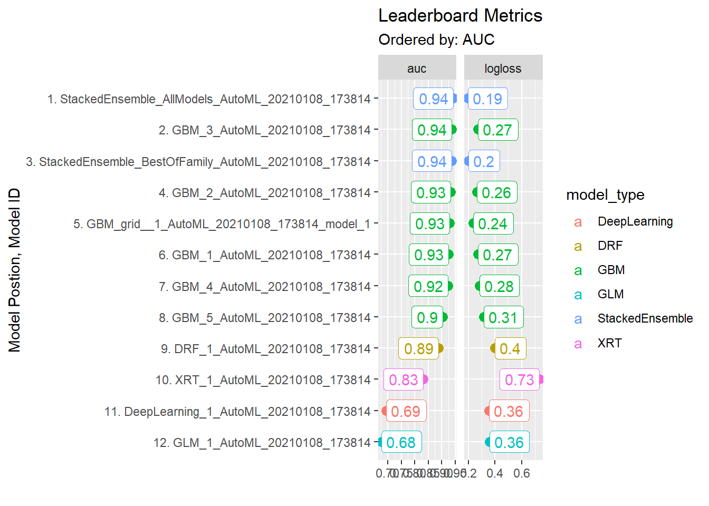
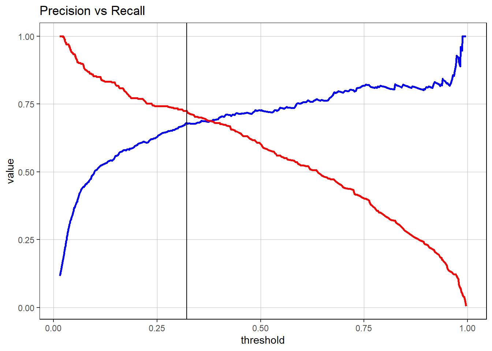
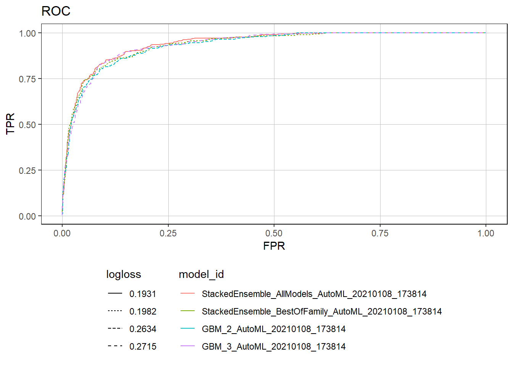
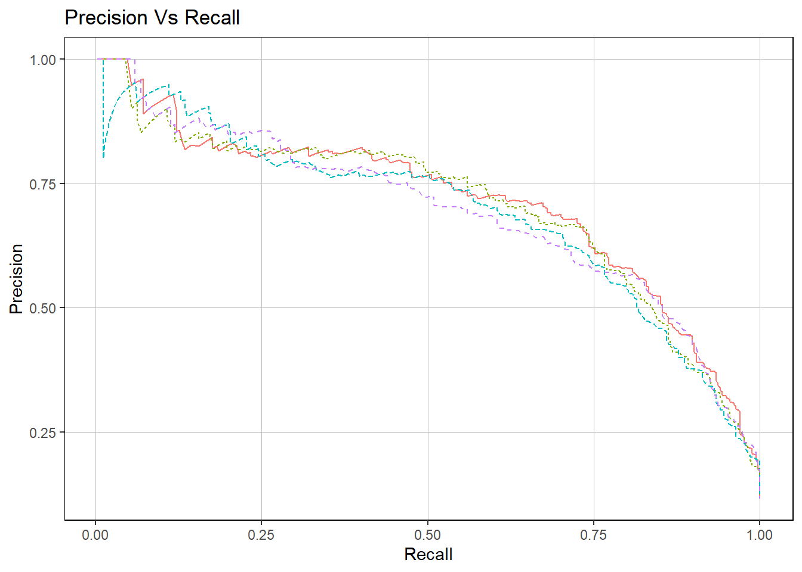
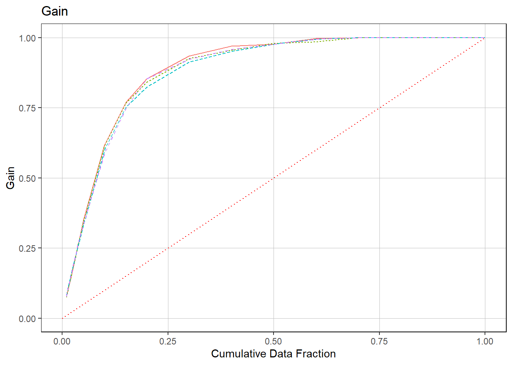
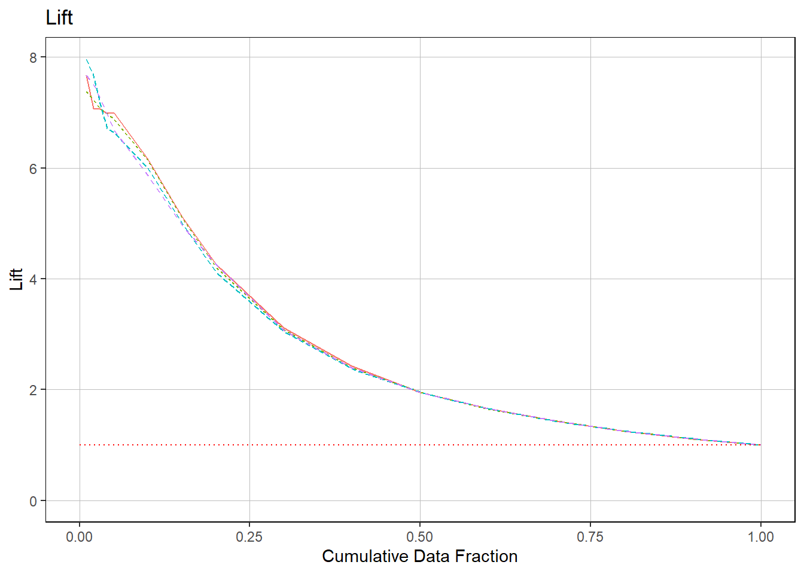
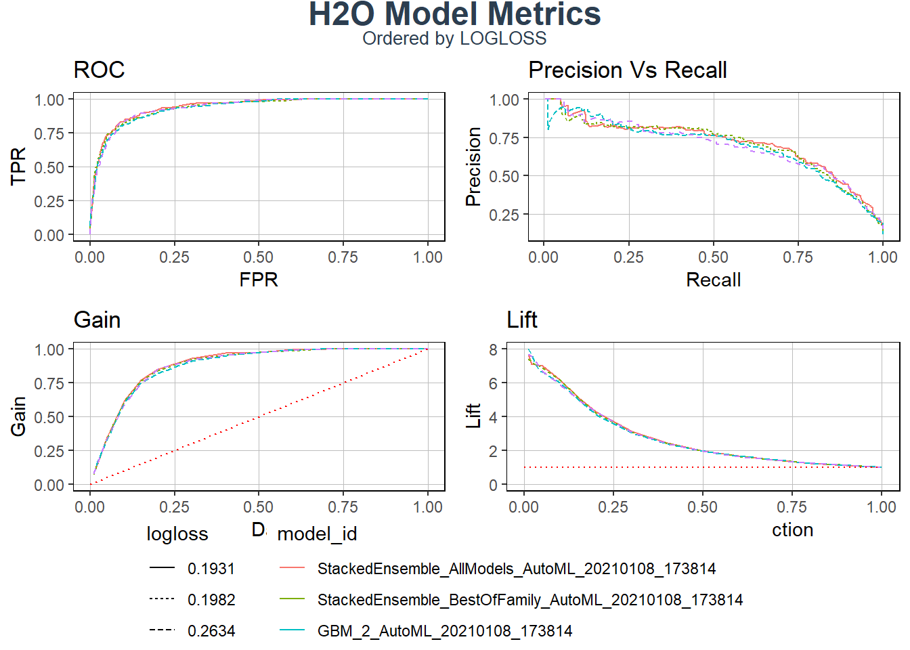

#Code from previous challenge
#Load Libraries
library(tidyverse)
library(readxl)
library(h2o)
library(rsample)
library(recipes)
#1 Load the training & test dataset
product_backorders_tbl <- read_csv("raw_data/product_backorders.txt")
set.seed(seed = 1113)
split_obj <- rsample::initial_split(product_backorders_tbl, prop = 0.85)
train_readable_tbl <- training(split_obj)
test_readable_tbl <- testing(split_obj)
#2 Specify the response and predictor variables
recipe_obj <- recipe(went_on_backorder ~., data = train_readable_tbl) %>%
step_zv(all_predictors()) %>%
prep()
train_tbl <- bake(recipe_obj, new_data = train_readable_tbl)
test_tbl <- bake(recipe_obj, new_data = test_readable_tbl)
# Modeling
h2o.init()## Connection successful!
##
## R is connected to the H2O cluster:
## H2O cluster uptime: 4 days 2 hours
## H2O cluster timezone: Europe/Berlin
## H2O data parsing timezone: UTC
## H2O cluster version: 3.32.0.1
## H2O cluster version age: 2 months and 30 days
## H2O cluster name: H2O_started_from_R_Ahmed_Elkhateeb_hft524
## H2O cluster total nodes: 1
## H2O cluster total memory: 1.81 GB
## H2O cluster total cores: 4
## H2O cluster allowed cores: 4
## H2O cluster healthy: TRUE
## H2O Connection ip: localhost
## H2O Connection port: 54321
## H2O Connection proxy: NA
## H2O Internal Security: FALSE
## H2O API Extensions: Amazon S3, Algos, AutoML, Core V3, TargetEncoder, Core V4
## R Version: R version 4.0.3 (2020-10-10)# Split data into a training and a validation data frame
split_h2o <- h2o.splitFrame(as.h2o(train_tbl), ratios = c(0.85), seed = 1234)##
|
| | 0%
|
|======================================================================| 100%train_h2o <- split_h2o[[1]]
valid_h2o <- split_h2o[[2]]
test_h2o <- as.h2o(test_tbl)##
|
| | 0%
|
|======================================================================| 100%# Set the target and predictors
y <- "went_on_backorder"
x <- setdiff(names(train_h2o), y)
#import leaderboard
automl_models_h2o <- read_rds("automl_models_h2o.rds")
h2o_leaderboard <- automl_models_h2o@leaderboard
#General functions
extract_h2o_model_name_by_position <- function(h2o_leaderboard, n = 1, verbose = T) {
model_name <- h2o_leaderboard %>%
as.tibble() %>%
slice(n) %>%
pull(model_id)
if (verbose) message(model_name)
return(model_name)
}
#New Theme
theme_new <- theme(
legend.position = "bottom",
legend.key = element_blank(),
panel.background = element_rect(fill = "transparent"),
panel.border = element_rect(color = "black", fill = NA, size = 0.5),
panel.grid.major = element_line(color = "grey", size = 0.333)
)
#1 Leaderboard visualization
plot_h2o_leaderboard <- function(h2o_leaderboard, order_by = c("auc", "logloss"),
n_max = 20, size = 4, include_lbl = TRUE) {
# Setup inputs
# adjust input so that all formats are working
order_by <- tolower(order_by[[1]])
leaderboard_tbl <- h2o_leaderboard %>%
as.tibble() %>%
select(-c(aucpr, mean_per_class_error, rmse, mse)) %>%
mutate(model_type = str_extract(model_id, "[^_]+")) %>%
rownames_to_column(var = "rowname") %>%
mutate(model_id = paste0(rowname, ". ", model_id) %>% as.factor())
# Transformation
if (order_by == "auc") {
data_transformed_tbl <- leaderboard_tbl %>%
slice(1:n_max) %>%
mutate(
model_id = as_factor(model_id) %>% reorder(auc),
model_type = as.factor(model_type)
) %>%
pivot_longer(cols = -c(model_id, model_type, rowname),
names_to = "key",
values_to = "value",
names_transform = list(key = forcats::fct_inorder)
)
} else if (order_by == "logloss") {
data_transformed_tbl <- leaderboard_tbl %>%
slice(1:n_max) %>%
mutate(
model_id = as_factor(model_id) %>% reorder(logloss) %>% fct_rev(),
model_type = as.factor(model_type)
) %>%
pivot_longer(cols = -c(model_id, model_type, rowname),
names_to = "key",
values_to = "value",
names_transform = list(key = forcats::fct_inorder)
)
} else {
# If nothing is supplied
stop(paste0("order_by = '", order_by, "' is not a permitted option."))
}
# Visualization
g <- data_transformed_tbl %>%
ggplot(aes(value, model_id, color = model_type)) +
geom_point(size = size) +
facet_wrap(~ key, scales = "free_x") +
labs(title = "Leaderboard Metrics",
subtitle = paste0("Ordered by: ", toupper(order_by)),
y = "Model Postion, Model ID", x = "")
if (include_lbl) g <- g + geom_label(aes(label = round(value, 2),
hjust = "inward"))
return(g)
}
plot_h2o_leaderboard(h2o_leaderboard, order_by = "auc",
n_max = 15, size = 3, include_lbl = TRUE)
#2 Tune the deeplearning model with grid search
deeplearning_h2o <-automl_models_h2o@leaderboard %>%
extract_h2o_model_name_by_position(12) %>%
h2o.getModel()
deeplearning_h2o## Model Details:
## ==============
##
## H2OBinomialModel: glm
## Model ID: GLM_1_AutoML_20210108_173814
## GLM Model: summary
## family link regularization
## 1 binomial logit Ridge ( lambda = 1.7995 )
## lambda_search
## 1 nlambda = 30, lambda.max = 7.5133, lambda.min = 1.7995, lambda.1se = 1.7995
## number_of_predictors_total number_of_active_predictors number_of_iterations
## 1 28 28 7
## training_frame
## 1 automl_training_RTMP_sid_ace4_5
##
## Coefficients: glm coefficients
## names coefficients standardized_coefficients
## 1 Intercept -1.894557 -1.998249
## 2 potential_issue.No -0.000362 -0.000362
## 3 potential_issue.Yes 0.000359 0.000359
## 4 deck_risk.No 0.003645 0.003645
## 5 deck_risk.Yes -0.003648 -0.003648
##
## ---
## names coefficients standardized_coefficients
## 24 sales_9_month -0.000000 -0.000839
## 25 min_bank -0.000001 -0.001141
## 26 pieces_past_due 0.000084 0.003074
## 27 perf_6_month_avg 0.000293 0.007494
## 28 perf_12_month_avg 0.000297 0.007379
## 29 local_bo_qty 0.000308 0.007175
##
## H2OBinomialMetrics: glm
## ** Reported on training data. **
##
## MSE: 0.1046583
## RMSE: 0.3235093
## LogLoss: 0.3634888
## Mean Per-Class Error: 0.3702426
## AUC: 0.6769413
## AUCPR: 0.2072414
## Gini: 0.3538825
## R^2: 0.004263599
## Residual Deviance: 10038.11
## AIC: 10096.11
##
## Confusion Matrix (vertical: actual; across: predicted) for F1-optimal threshold:
## No Yes Error Rate
## No 7059 5101 0.419490 =5101/12160
## Yes 529 1119 0.320995 =529/1648
## Totals 7588 6220 0.407735 =5630/13808
##
## Maximum Metrics: Maximum metrics at their respective thresholds
## metric threshold value idx
## 1 max f1 0.120556 0.284443 144
## 2 max f2 0.119518 0.463531 173
## 3 max f0point5 0.122880 0.228641 78
## 4 max accuracy 0.125690 0.880939 21
## 5 max precision 0.126715 0.565217 18
## 6 max recall 0.109665 1.000000 358
## 7 max specificity 0.173973 0.999918 0
## 8 max absolute_mcc 0.119518 0.180660 173
## 9 max min_per_class_accuracy 0.120873 0.617112 135
## 10 max mean_per_class_accuracy 0.119564 0.637870 172
## 11 max tns 0.173973 12159.000000 0
## 12 max fns 0.173973 1648.000000 0
## 13 max fps 0.071162 12160.000000 399
## 14 max tps 0.109665 1648.000000 358
## 15 max tnr 0.173973 0.999918 0
## 16 max fnr 0.173973 1.000000 0
## 17 max fpr 0.071162 1.000000 399
## 18 max tpr 0.109665 1.000000 358
##
## Gains/Lift Table: Extract with `h2o.gainsLift(<model>, <data>)` or `h2o.gainsLift(<model>, valid=<T/F>, xval=<T/F>)`
## H2OBinomialMetrics: glm
## ** Reported on validation data. **
##
## MSE: 0.1043263
## RMSE: 0.3229959
## LogLoss: 0.3625866
## Mean Per-Class Error: 0.3536557
## AUC: 0.6793189
## AUCPR: 0.1909624
## Gini: 0.3586378
## R^2: 0.004368718
## Residual Deviance: 1731.714
## AIC: 1789.714
##
## Confusion Matrix (vertical: actual; across: predicted) for F1-optimal threshold:
## No Yes Error Rate
## No 1127 977 0.464354 =977/2104
## Yes 69 215 0.242958 =69/284
## Totals 1196 1192 0.438023 =1046/2388
##
## Maximum Metrics: Maximum metrics at their respective thresholds
## metric threshold value idx
## 1 max f1 0.120206 0.291328 164
## 2 max f2 0.119236 0.469889 196
## 3 max f0point5 0.122027 0.226801 99
## 4 max accuracy 0.139515 0.881491 0
## 5 max precision 0.139515 1.000000 0
## 6 max recall 0.112746 1.000000 346
## 7 max specificity 0.139515 1.000000 0
## 8 max absolute_mcc 0.119816 0.189681 177
## 9 max min_per_class_accuracy 0.120886 0.620247 139
## 10 max mean_per_class_accuracy 0.120176 0.646441 165
## 11 max tns 0.139515 2104.000000 0
## 12 max fns 0.139515 283.000000 0
## 13 max fps 0.063489 2104.000000 399
## 14 max tps 0.112746 284.000000 346
## 15 max tnr 0.139515 1.000000 0
## 16 max fnr 0.139515 0.996479 0
## 17 max fpr 0.063489 1.000000 399
## 18 max tpr 0.112746 1.000000 346
##
## Gains/Lift Table: Extract with `h2o.gainsLift(<model>, <data>)` or `h2o.gainsLift(<model>, valid=<T/F>, xval=<T/F>)`
## H2OBinomialMetrics: glm
## ** Reported on cross-validation data. **
## ** 5-fold cross-validation on training data (Metrics computed for combined holdout predictions) **
##
## MSE: 0.1047504
## RMSE: 0.3236517
## LogLoss: 0.3639201
## Mean Per-Class Error: 0.3728399
## AUC: 0.6757099
## AUCPR: 0.2053919
## Gini: 0.3514197
## R^2: 0.003386969
## Residual Deviance: 10050.02
## AIC: 10108.02
##
## Confusion Matrix (vertical: actual; across: predicted) for F1-optimal threshold:
## No Yes Error Rate
## No 7077 5083 0.418010 =5083/12160
## Yes 540 1108 0.327670 =540/1648
## Totals 7617 6191 0.407228 =5623/13808
##
## Maximum Metrics: Maximum metrics at their respective thresholds
## metric threshold value idx
## 1 max f1 0.120344 0.282689 149
## 2 max f2 0.118891 0.461683 201
## 3 max f0point5 0.122137 0.226021 80
## 4 max accuracy 0.124414 0.881011 20
## 5 max precision 0.124414 0.560976 20
## 6 max recall 0.107658 1.000000 392
## 7 max specificity 0.219768 0.999918 0
## 8 max absolute_mcc 0.119624 0.178450 176
## 9 max min_per_class_accuracy 0.120587 0.617112 140
## 10 max mean_per_class_accuracy 0.119624 0.636664 176
## 11 max tns 0.219768 12159.000000 0
## 12 max fns 0.219768 1648.000000 0
## 13 max fps 0.013925 12160.000000 399
## 14 max tps 0.107658 1648.000000 392
## 15 max tnr 0.219768 0.999918 0
## 16 max fnr 0.219768 1.000000 0
## 17 max fpr 0.013925 1.000000 399
## 18 max tpr 0.107658 1.000000 392
##
## Gains/Lift Table: Extract with `h2o.gainsLift(<model>, <data>)` or `h2o.gainsLift(<model>, valid=<T/F>, xval=<T/F>)`
## Cross-Validation Metrics Summary:
## mean sd cv_1_valid cv_2_valid cv_3_valid cv_4_valid
## accuracy 0.61406386 0.07876439 0.7103548 0.5311369 0.60680664 0.54545456
## auc 0.67729616 0.007529684 0.6695979 0.6798052 0.68900394 0.6752426
## aucpr 0.20908433 0.014252648 0.21712276 0.2291131 0.20713523 0.19700201
## err 0.38593614 0.07876439 0.2896452 0.46886313 0.39319333 0.45454547
## err_count 1065.8 217.51253 800.0 1295.0 1086.0 1255.0
## cv_5_valid
## accuracy 0.6765665
## auc 0.6728311
## aucpr 0.19504857
## err 0.32343355
## err_count 893.0
##
## ---
## mean sd cv_1_valid cv_2_valid cv_3_valid
## precision 0.18778233 0.012626315 0.2002551 0.17464599 0.18760331
## r2 0.00886279 0.012140817 0.003511607 0.0035036695 0.0034232629
## recall 0.65717417 0.13055412 0.47575757 0.7848485 0.6878788
## residual_deviance 1993.4183 38.278896 2011.4205 2011.4265 2011.5519
## rmse 0.32275695 0.0021142615 0.3237809 0.32378218 0.32379523
## specificity 0.6082237 0.10698552 0.7421875 0.49671054 0.59580594
## cv_4_valid cv_5_valid
## precision 0.17577031 0.20063694
## r2 0.0032950246 0.030580385
## recall 0.76291794 0.5744681
## residual_deviance 2007.687 1925.0056
## rmse 0.32344216 0.31898424
## specificity 0.5160362 0.6903783h2o.performance(deeplearning_h2o, newdata = as.h2o(test_tbl))##
|
| | 0%
|
|======================================================================| 100%## H2OBinomialMetrics: glm
##
## MSE: 0.1028372
## RMSE: 0.3206824
## LogLoss: 0.3587528
## Mean Per-Class Error: 0.3754762
## AUC: 0.6770917
## AUCPR: 0.1954219
## Gini: 0.3541834
## R^2: 0.0038907
## Residual Deviance: 2049.913
## AIC: 2107.913
##
## Confusion Matrix (vertical: actual; across: predicted) for F1-optimal threshold:
## No Yes Error Rate
## No 1701 822 0.325803 =822/2523
## Yes 142 192 0.425150 =142/334
## Totals 1843 1014 0.337417 =964/2857
##
## Maximum Metrics: Maximum metrics at their respective thresholds
## metric threshold value idx
## 1 max f1 0.121464 0.284866 121
## 2 max f2 0.119107 0.465828 200
## 3 max f0point5 0.122588 0.224475 81
## 4 max accuracy 0.272248 0.882744 0
## 5 max precision 0.125387 0.461538 8
## 6 max recall 0.109723 1.000000 372
## 7 max specificity 0.272248 0.999604 0
## 8 max absolute_mcc 0.119107 0.185079 200
## 9 max min_per_class_accuracy 0.121007 0.621879 136
## 10 max mean_per_class_accuracy 0.119317 0.640656 193
## 11 max tns 0.272248 2522.000000 0
## 12 max fns 0.272248 334.000000 0
## 13 max fps 0.097014 2523.000000 399
## 14 max tps 0.109723 334.000000 372
## 15 max tnr 0.272248 0.999604 0
## 16 max fnr 0.272248 1.000000 0
## 17 max fpr 0.097014 1.000000 399
## 18 max tpr 0.109723 1.000000 372
##
## Gains/Lift Table: Extract with `h2o.gainsLift(<model>, <data>)` or `h2o.gainsLift(<model>, valid=<T/F>, xval=<T/F>)`deeplearning_grid_01 <- h2o.grid(
# See help page for available algos
algorithm = "deeplearning",
# I just use the same as the object
grid_id = "deeplearning_grid_01",
# predictor and response variables
x = x,
y = y,
# training and validation frame and crossfold validation
training_frame = train_h2o,
validation_frame = valid_h2o,
nfolds = 5,
# Hyperparamters: Use deeplearning_h2o@allparameters to see all
hyper_params = list(
# Use some combinations (the first one was the original)
hidden = list(c(10, 10, 10), c(50, 20, 10), c(20, 20, 20)),
epochs = c(10, 50, 100)
)
)##
|
| | 0%
|
|======================================================================| 100%deeplearning_grid_01## H2O Grid Details
## ================
##
## Grid ID: deeplearning_grid_01
## Used hyper parameters:
## - epochs
## - hidden
## Number of models: 18
## Number of failed models: 0
##
## Hyper-Parameter Search Summary: ordered by increasing logloss
## epochs hidden model_ids
## 1 10.397045101411086 [10, 10, 10] deeplearning_grid_01_model_1
## 2 10.396927341214049 [50, 20, 10] deeplearning_grid_01_model_4
## 3 10.409092879950999 [10, 10, 10] deeplearning_grid_01_model_10
## 4 51.9971482887287 [50, 20, 10] deeplearning_grid_01_model_14
## 5 10.396393429570598 [50, 20, 10] deeplearning_grid_01_model_13
## 6 52.014627078121705 [10, 10, 10] deeplearning_grid_01_model_2
## 7 10.395790869630483 [20, 20, 20] deeplearning_grid_01_model_16
## 8 101.35187167927704 [10, 10, 10] deeplearning_grid_01_model_12
## 9 51.991865553105626 [10, 10, 10] deeplearning_grid_01_model_11
## 10 10.386865641652328 [20, 20, 20] deeplearning_grid_01_model_7
## 11 51.99285424032227 [20, 20, 20] deeplearning_grid_01_model_8
## 12 101.38362389517172 [50, 20, 10] deeplearning_grid_01_model_15
## 13 101.39653583271874 [50, 20, 10] deeplearning_grid_01_model_6
## 14 101.38557322432925 [10, 10, 10] deeplearning_grid_01_model_3
## 15 51.9967865982991 [20, 20, 20] deeplearning_grid_01_model_17
## 16 101.3983354815562 [20, 20, 20] deeplearning_grid_01_model_18
## 17 52.01095052851914 [50, 20, 10] deeplearning_grid_01_model_5
## 18 101.4065016570127 [20, 20, 20] deeplearning_grid_01_model_9
## logloss
## 1 0.7282492875165198
## 2 0.9022341573650843
## 3 1.3660532620697228
## 4 1.5603057754351508
## 5 1.7496747999045403
## 6 1.8271225990703663
## 7 1.8950367054796364
## 8 1.9181488233387365
## 9 1.9307167842828488
## 10 2.1254774968522754
## 11 2.4625788427412574
## 12 2.6618238911964958
## 13 2.942003757658708
## 14 3.056303546598732
## 15 3.1166216355115925
## 16 3.143703481576471
## 17 4.1979235215557695
## 18 9.347047370319068#3 Visualize the trade of between the precision and the recall and the optimal threshold
stacked_ensemble_h2o <- automl_models_h2o@leaderboard %>% extract_h2o_model_name_by_position(1) %>% h2o.getModel()
performance_h2o <- h2o.performance(stacked_ensemble_h2o, newdata = as.h2o(test_tbl))##
|
| | 0%
|
|======================================================================| 100%performance_tbl <- performance_h2o %>%
h2o.metric() %>%
as.tibble()
performance_tbl %>%
ggplot(aes(x = threshold)) +
geom_line(aes(y = precision), color = "blue", size = 1) +
geom_line(aes(y = recall), color = "red", size = 1) +
# Insert line where precision and recall are harmonically optimized
geom_vline(xintercept = h2o.find_threshold_by_max_metric(performance_h2o, "f1")) +
labs(title = "Precision vs Recall", y = "value") +
theme_new
#Plots
# Performance Visualization ----
library(cowplot)
library(glue)
# Inputs
h2o_leaderboard <- automl_models_h2o@leaderboard
newdata <- test_tbl
order_by <- "logloss"
size <- 0.5
max_models <- 4
leaderboard_tbl <- h2o_leaderboard %>%
as_tibble() %>%
slice(1:max_models)
newdata_tbl <- newdata %>%
as_tibble()
# Selecting the first, if nothing is provided
order_by <- tolower(order_by[[1]])
# Convert string stored in a variable to column name (symbol)
order_by_expr <- rlang::sym(order_by)
# 1. Model metrics
get_model_performance_metrics <- function(model_id, test_tbl) {
model_h2o <- h2o.getModel(model_id)
perf_h2o <- h2o.performance(model_h2o, newdata = as.h2o(test_tbl))
perf_h2o %>%
h2o.metric() %>%
as.tibble() %>%
select(threshold, tpr, fpr, precision, recall)
}
model_metrics_tbl <- leaderboard_tbl %>%
mutate(metrics = map(model_id, get_model_performance_metrics, newdata_tbl)) %>%
unnest(cols = metrics) %>%
mutate(
model_id = as_factor(model_id) %>%
# programmatically reorder factors depending on order_by
fct_reorder(!! order_by_expr,
.desc = ifelse(order_by == "auc", TRUE, FALSE)),
auc = auc %>%
round(3) %>%
as.character() %>%
as_factor() %>%
fct_reorder(as.numeric(model_id)),
logloss = logloss %>%
round(4) %>%
as.character() %>%
as_factor() %>%
fct_reorder(as.numeric(model_id))
)##
|
| | 0%
|
|======================================================================| 100%
##
|
| | 0%
|
|======================================================================| 100%
##
|
| | 0%
|
|======================================================================| 100%
##
|
| | 0%
|
|======================================================================| 100%#4 ROC Plot
roc_plot <- model_metrics_tbl %>%
ggplot(aes(fpr, tpr, color = model_id, linetype = !! order_by_expr)) +
geom_line(size = size) +
theme_new +
labs(title = "ROC", x = "FPR", y = "TPR") +
theme(legend.direction = "vertical")
roc_plot
#5 Precision vs Recall Plot
precision_recall_plot <- model_metrics_tbl %>%
ggplot(aes(recall, precision, color = model_id, linetype = !! order_by_expr)) +
geom_line(size = size) +
theme_new +
labs(title = "Precision Vs Recall", x = "Recall", y = "Precision") +
theme(legend.position = "none")
precision_recall_plot
# Gain / Lift
get_gain_lift <- function(model_id, test_tbl) {
model_h2o <- h2o.getModel(model_id)
perf_h2o <- h2o.performance(model_h2o, newdata = as.h2o(test_tbl))
perf_h2o %>%
h2o.gainsLift() %>%
as.tibble() %>%
select(group, cumulative_data_fraction, cumulative_capture_rate, cumulative_lift)
}
gain_lift_tbl <- leaderboard_tbl %>%
mutate(metrics = map(model_id, get_gain_lift, newdata_tbl)) %>%
unnest(cols = metrics) %>%
mutate(
model_id = as_factor(model_id) %>%
fct_reorder(!! order_by_expr,
.desc = ifelse(order_by == "auc", TRUE, FALSE)),
auc = auc %>%
round(3) %>%
as.character() %>%
as_factor() %>%
fct_reorder(as.numeric(model_id)),
logloss = logloss %>%
round(4) %>%
as.character() %>%
as_factor() %>%
fct_reorder(as.numeric(model_id))
) %>%
rename(
gain = cumulative_capture_rate,
lift = cumulative_lift
) ##
|
| | 0%
|
|======================================================================| 100%
##
|
| | 0%
|
|======================================================================| 100%
##
|
| | 0%
|
|======================================================================| 100%
##
|
| | 0%
|
|======================================================================| 100%#6 Gain Plot
gain_plot <- gain_lift_tbl %>%
ggplot(aes(cumulative_data_fraction, gain,
color = model_id, linetype = !! order_by_expr)) +
geom_line(size = size,) +
geom_segment(x = 0, y = 0, xend = 1, yend = 1,
color = "red", size = size, linetype = "dotted") +
theme_new +
expand_limits(x = c(0, 1), y = c(0, 1)) +
labs(title = "Gain",
x = "Cumulative Data Fraction", y = "Gain") +
theme(legend.position = "none")
gain_plot
#7 Lift Plot
lift_plot <- gain_lift_tbl %>%
ggplot(aes(cumulative_data_fraction, lift,
color = model_id, linetype = !! order_by_expr)) +
geom_line(size = size) +
geom_segment(x = 0, y = 1, xend = 1, yend = 1,
color = "red", size = size, linetype = "dotted") +
theme_new +
expand_limits(x = c(0, 1), y = c(0, 1)) +
labs(title = "Lift",
x = "Cumulative Data Fraction", y = "Lift") +
theme(legend.position = "none")
lift_plot
#8 Dashboard with cowplot
# cowplot::get_legend extracts a legend from a ggplot object
p_legend <- get_legend(roc_plot)
# Remove legend from roc_plot
roc_plot <- roc_plot + theme(legend.position = "none")
# cowplot::plt_grid() combines multiple ggplots into a single cowplot object
p <- cowplot::plot_grid(roc_plot, precision_recall_plot, gain_plot, lift_plot, ncol = 2)
# cowplot::ggdraw() sets up a drawing layer
p_title <- ggdraw() +
# cowplot::draw_label() draws text on a ggdraw layer / ggplot object
draw_label("H2O Model Metrics", size = 18, fontface = "bold",
color = "#2C3E50")
p_subtitle <- ggdraw() +
draw_label(glue("Ordered by {toupper(order_by)}"), size = 10,
color = "#2C3E50")
# Combine everything
cow_plot_dashboard <- plot_grid(p_title, p_subtitle, p, p_legend,
# Adjust the relative spacing, so that the legends always fits
ncol = 1, rel_heights = c(0.05, 0.05, 1, 0.05 * max_models))
cow_plot_dashboard